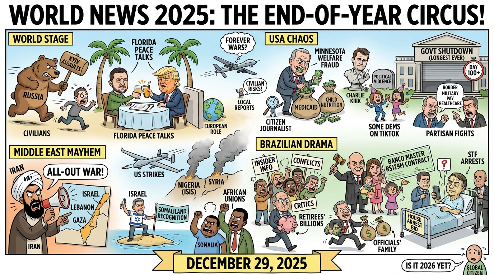

The Daily Globe: Ukraine-Russia War and Zelensky-Trump Peace Talks, Minnesota Welfare Fraud Scandal, and Escândalo do Banco Master
Published on 2025-12-29

World
- Ukraine-Russia War and Zelensky-Trump Peace Talks
Ongoing Russian assaults on Kyiv (killing civilians) clashed with diplomatic efforts, including Ukrainian President Volodymyr Zelensky's meeting with U.S. President Donald Trump in Florida to discuss a U.S.-brokered peace plan. Critics accused Russia of stalling for territorial gains, while others debated U.S. involvement and Europe's role in blocking negotiations.
- Middle East Tensions: Israel-Iran Escalation and Somaliland Recognition
Iran's president declared an "all-out war" against the U.S., Europe, and Israel amid reports of Israeli invasions into Lebanon and Gaza. A major flashpoint was Israel's formal recognition of Somaliland's independence, condemned by Somalia and African unions as a sovereignty violation, potentially destabilizing the Horn of Africa.
- U.S. Military Strikes in Nigeria and Syria
The U.S. conducted airstrikes on ISIS-linked camps in Nigeria (at Nigeria's request, per Trump) and Syria, but local reports disputed casualty claims and raised concerns about civilian risks and neocolonialism. This reignited debates on U.S. "forever wars".
- Myanmar's Contested Elections Under Military Rule
The junta held its first general election in five years, widely labeled a "sham" due to opposition bans and ongoing civil war. Human rights groups called for international rejection of results.
- Sudan Civil War Worsening
Escalating violence between Sudan's army and paramilitaries, exacerbating one of the world's worst humanitarian crises (millions displaced, famine risks).
USA
- Minnesota Welfare Fraud Scandal
A massive Medicaid and child nutrition fraud scheme involving the Somali immigrant community in Minnesota dominated discussions. Citizen journalist exposed over $110 million in fraudulent daycare operations, sparking outrage over taxpayer money, immigration policies, and alleged mainstream media suppression.
- Assassination of Charlie Kirk and Political Violence
The murder of conservative activist Charlie Kirk revisited, with controversy over celebrations of the killing by some Democrats on TikTok and accusations of normalized political violence.
- Ongoing Government Shutdown
The longest U.S. government shutdown in history, blamed on partisan fights over border security, military pay, and healthcare for immigrants.
- High-Profile Crime Cases and Verdicts
Year-in-review stories spotlighted the Idaho student murders (plea deal), Karen Read trial verdict, and other crimes.
- Epstein Files and Elite Accountability
Renewed anger over the Jeffrey Epstein client list and files, with calls for prosecutions of powerful figures.
Brazil
- Escândalo do Banco Master
A R$129 million contract awarded to the bank, allegedly linked to Supreme Court Justice Alexandre de Moraes and his family (including his wife). Critics claimed insider information, privileged access, and potential conflicts of interest.
- Fraudes no INSS and Broader Corruption
Theft of billions from retirees via the INSS (social security), with new details on family members of officials involved, alongside deficits in state-owned companies.
- Bolsonaro's Health and Legal Maneuvers
Former President Jair Bolsonaro underwent a procedure and posted from hospital despite restrictions, sparking debates on house arrest bid and STF arrests of associates.
- State-Level Crises in São Paulo
Outages in power and water under Governor Tarcísio de Freitas, highlighting privatization failures and infrastructure neglect.
- Judicial and Political Transparency Issues
Accusations against STF and government for hiding agendas, with ties to multiple frauds like Grupo Refit.
Topic Index
- Ukraine-Russia war
- Zelensky-Trump talks
- Israel-Iran escalation
- Somaliland recognition
- US strikes Nigeria Syria
- Myanmar elections
- Sudan civil war
- Minnesota welfare fraud